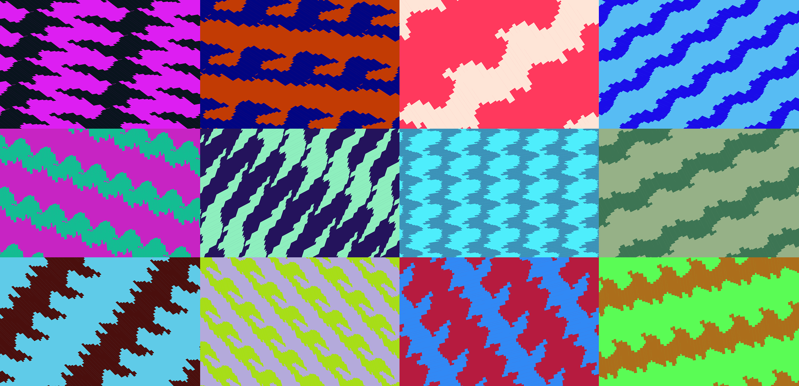
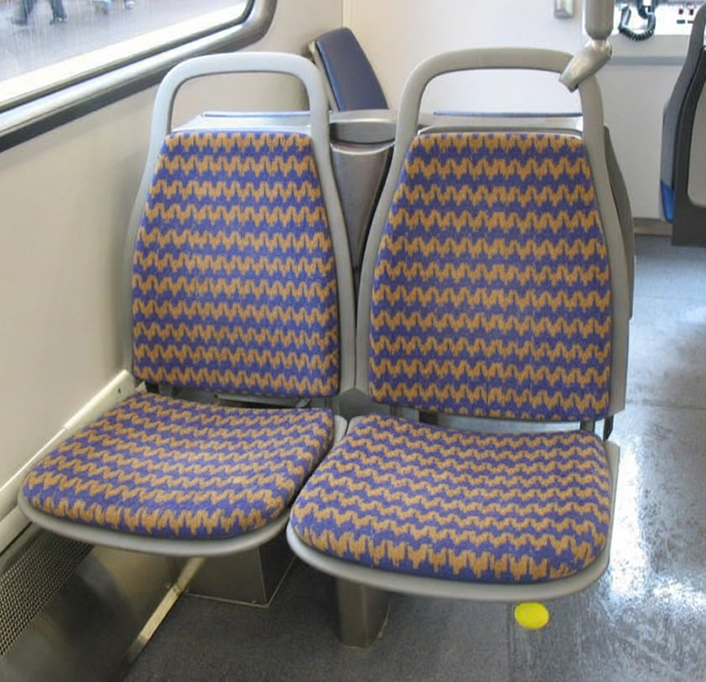
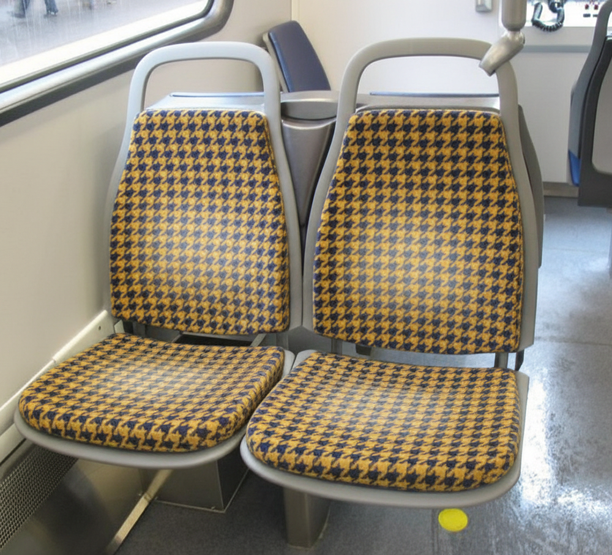
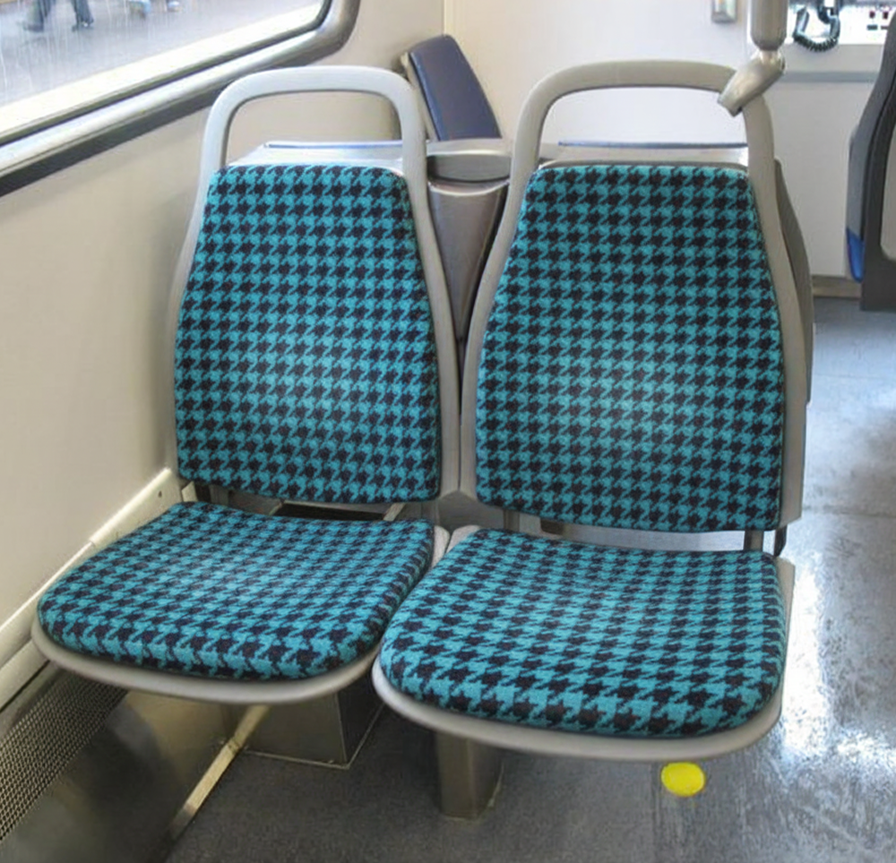
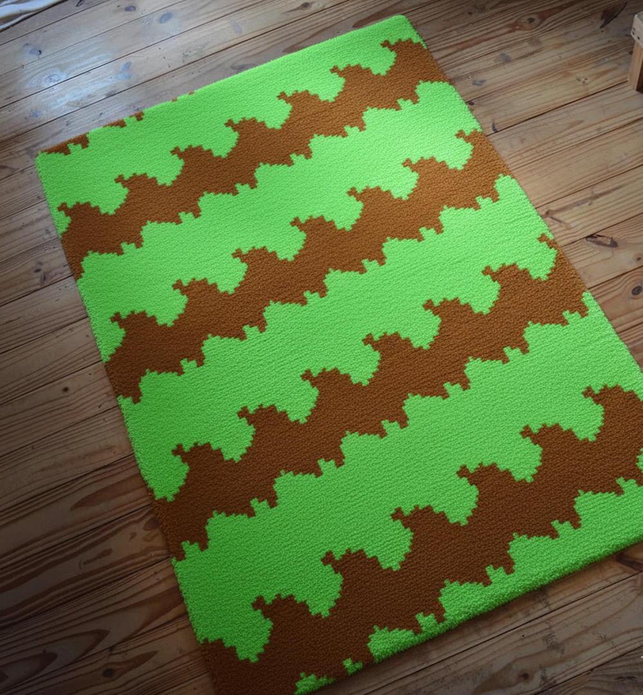
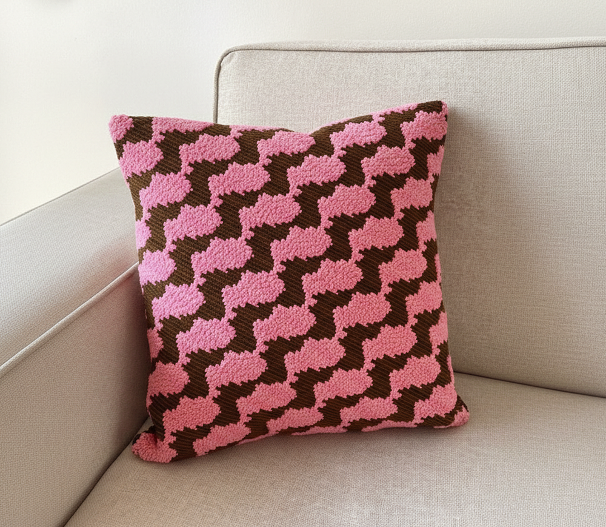

    <!DOCTYPE html>
    <html lang="en">
    <head>
        <meta charset="UTF-8">
        <meta name="viewport" content="width=device-width, initial-scale=1.0">
        <title>BSPG | Index</title>
        <link rel="stylesheet" href="home.css">
        <link rel="stylesheet" as="style" crossorigin href="https://cdn.jsdelivr.net/gh/orioncactus/pretendard@v1.3.9/dist/web/static/pretendard.min.css" />
    <link rel="shortcut icon" href="data/favicon/favicon_1.png" type="image/x-icon">
    </head>
    <body>
        
    </body>
    </html>
    <div id="wrap-overlay">
        <div class="header-logo">
            BSPG
        </div>
        <div id="main-overlay">
            <p class="p1">
                25.11.17-12.08<br>
                권호준, 양예슬, 임세은, 유승현<br>
                계원예술대학교 디지털디자인 2학기 기말 프로젝트<br>
            </p>
            <p class="p2">
                이번 프로젝트는 이동수단의 모켓(Moquette) 패턴이 가진 역사적 의미에 주목하는 것에서 출발합니다. 
                모켓 패턴은 기차나 버스 시트 커버에 사용되며 뛰어난 내구성과 독특한 디자인으로 오랫동안 사용되어 왔고, 나아가 문화와 시대상을 반영하는 시각적 레퍼런스로 기능해왔습니다. 
                현재 우리나라에서도 여전히 모켓 패턴을 버스 시트에 적용하고 있지만, 이러한 디자인을 쉽게 참고하거나 새로운 디자인을 시도할 수 있는 체계적인 툴은 부족한 실정입니다. 
                따라서 본 프로젝트의 목표는 누구나 손쉽게 고유한 모켓 패턴을 직접 디자인하고 이를 레퍼런스로 활용할 수 있도록 '모켓 패턴 생성기'를 제작하는 것입니다. 
                이 생성기는 사용자가 색상, 반복 구조 등을 간단하게 조합하여 새로운 패턴을 만들어낼 수 있도록 하여 버스 시트를 넘어 의자 시트에 들어갈 패턴을 제작하는 것을 도와줍니다. 
                모켓 패턴이 공공 버스 시트 커버에서 출발하였다는 역사적 맥락을 고려하여 사각형으로 만든 한반도를 기본 개체로 사용하였습니다.
            </p>

            <p class="p3">
                
            </p>

            <p class="p4">
                버스 시트 패턴을 조사하던 중, 저희는 ‘모켓(Moquette)’이라는 레퍼런스를 발견했습니다. 특히 런던의 모켓은 100년이 넘는 역사를 가지고 있으며, 도시의 상징으로 자리 잡은 독특한 패턴이라는 점이 인상적이었습니다. 이 내용을 확인하면서 모켓이 단순한 소재를 넘어 문화적 의미를 지닌 디자인 요소임을 알게 되었습니다.
            </p>

            <p class="p5">
                
            </p>

            <p class="p6">
                저희는 모여서 각자의 방식대로 단일 객체 패턴을 구상하는 작업을 시작했습니다. 한국적인 요소에 집중하며 여러 시도를 해 본 끝에 한반도를 모티프로 선택했습니다. 이후 캔버스의 fillRect 기능을 활용해 네모 한 칸씩 쌓아 올리는 방식으로 형태를 구축하며 패턴을 완성했습니다.
                <br>
                <br>
                패턴 생성기 내부에서 모듈 변형은 벡터 좌표 연산을 통해 화질 저하 없는 실시간 확대/축소 및 비율 왜곡을 구현했습니다.
                <br>
                <br>
                패턴 생성기 내부에서 패턴 회전은 '모듈 단위 회전’과 '캔버스 전체 회전'을 분리하여 복합적인 기하학 패턴 생성을 가능하게 만들었습니다.
                <br>
                <br>
                패턴 생성기 내부에서 개체를 늘리는 기능은 캔버스 회전 시 발생하는 사각지대를 계산하고, 화면 밖 영역까지 오버드로잉(Over-drawing)하여 끊김 없는 패턴을 구현했습니다.
            </p>

            <p class="p7">
                
            </p>

            <p class="p8">
                색상 생성 알고리즘은 '16진수 기반의 무작위 추출 방식을 채택했습니다. 인간의 의도적인 배색을 배제하고, 웹에서 표현 가능한 1,677만 가지의 RGB 색상 공간 전체를 활용함으로써, 사용자가 미리 정해둔 팔레트에서 고르는 것이 아닌, 고정관념에서 벗어난 우연적인 색상을 고를 수 있도록 설계했습니다.
            </p>

            <div class="mockupIMG">
                
            </div>
            <div class="mockupIMG">
                
            </div>
            <div class="mockupIMG">
                
            </div>
            <div class="mockupIMG">
                
            </div>
            <div class="mockupIMG">
                
            </div>
        </div>
    </div>